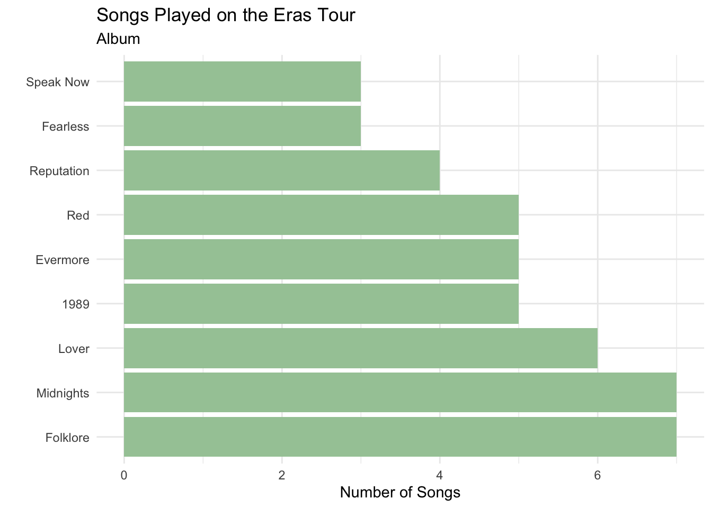
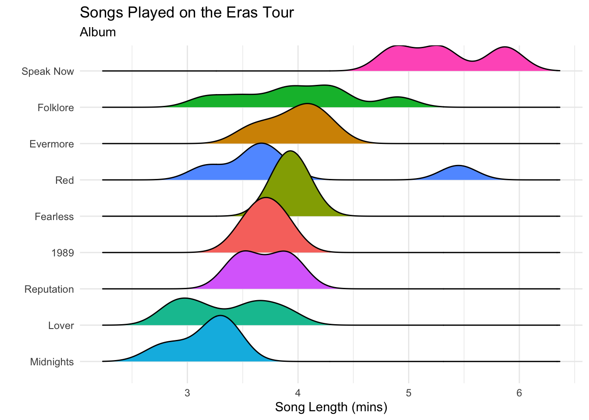

Code-Along 8: Factor Variables
Let’s explore factor variables in R! Work through these questions, running or editing the code provided to help you answer them.
- What are the two general purposes for factor variables (in R)?
fct()
The
fct()function in forcats serves the same purpose as what function in base R?How are the levels automatically ordered with the
fct()function? How is this different from base R?
[1] Lover Lover Lover Lover Lover Lover
[7] Fearless Fearless Fearless Evermore Evermore Evermore
[13] Evermore Evermore Reputation Reputation Reputation Reputation
[19] Speak Now Speak Now Red Red Red Red
[25] Folklore Folklore Folklore Folklore Folklore Folklore
[31] Folklore 1989 1989 1989 1989 1989
[37] Red Speak Now Midnights Midnights Midnights Midnights
[43] Midnights Midnights Midnights
9 Levels: Lover Fearless Evermore Reputation Speak Now Red Folklore ... MidnightsEdit the code above to just output the levels of the
Albumvariable.What does including the
levels =argument do infct()?
[1] Lover Lover Lover Lover Lover Lover
[7] Fearless Fearless Fearless Evermore Evermore Evermore
[13] Evermore Evermore Reputation Reputation Reputation Reputation
[19] Speak Now Speak Now Red Red Red Red
[25] Folklore Folklore Folklore Folklore Folklore Folklore
[31] Folklore 1989 1989 1989 1989 1989
[37] Red Speak Now Midnights Midnights Midnights Midnights
[43] Midnights Midnights Midnights
9 Levels: Fearless Speak Now Red 1989 Reputation Lover Folklore ... Midnights- What happens if you forget to provide an album to
levels =that exists in the data in the code above?
fct_recode()
What does this function do? When would you want to use it?
What happens to non-specified levels in
fct_recode()?Change the level “Red” to “Red!” and “Fearless” to “Fearless - Taylors Version” in the
Albumvariable:
fct_collapse()
- What does this function do? When would you want to use it?
# A tibble: 45 × 5
Song Album Length Single Genre
<chr> <chr> <dbl> <chr> <fct>
1 Miss Americana & the Heartbreak Prince Lover 3.9 N electropop
2 Cruel Summer Lover 2.97 Y electropop
3 The Man Lover 3.17 Y electropop
4 You Need to Calm Down Lover 2.85 Y electropop
5 Lover Lover 3.68 Y electropop
6 The Archer Lover 3.52 N electropop
7 Fearless Fearless 4.03 Y country pop
8 You Belong With Me Fearless 3.85 Y country pop
9 Love Story Fearless 3.92 Y country pop
10 'tis the damn season Evermore 3.82 N folk pop
# ℹ 35 more rowsWhy would you want to use
fct_collapse()rather thancase_when()?What happens to levels of the variable
.f =that you do not include infct_collapse()?
[1] "electropop" "folk pop" "country pop" "Midnights" "pop rock" - Edit the code below to fix this, so that the Midnights album is categorized as “other” in the
genrevariable.
fct_relevel()
- What does this function do? When would you want to use it?
eras_data |>
mutate(Album = fct_relevel(.f = Album,
c("Fearless","1989","Taylor Swift",
"Speak Now","Red","Midnights","Reputation"))) |>
pull(Album) |>
levels()[1] "Fearless" "1989" "Speak Now" "Red" "Midnights"
[6] "Reputation" "Evermore" "Folklore" "Lover" - What happens with levels that are not specified?
fct_infreq()
- What does
fct_infreq()do? When would you want to use it?
eras_data |>
ggplot() +
geom_bar(aes(y = fct_infreq(Album)),
fill = "#A5C9A5") +
theme_minimal() +
labs(x = "Number of Songs",
y = "",
subtitle = "Album",
title = "Songs Played on the Eras Tour")
fct_reorder()
- What does
fct_reorder()do? In what setting would you use it?
# you may need to install this package!
library(ggridges)
eras_data |>
ggplot(aes(x = Length,
y = fct_reorder(.f = Album,
.x = Length,
.fun = mean),
fill = Album)) +
geom_density_ridges() +
theme_minimal() +
theme(legend.position = "none")+
labs(x = "Song Length (mins)",
y = "",
subtitle = "Album",
title = "Songs Played on the Eras Tour")
fct_reorder2()
What does
fct_reorder2()do? In what setting would you use it?What are the arguments to
fct_reorder2()?Let’s improve a plot of the number of listings over time for five cities in Texas. Use
fct_reorder2()to reorder the legend below so that the legend aligns with the order of the lines in the plot.